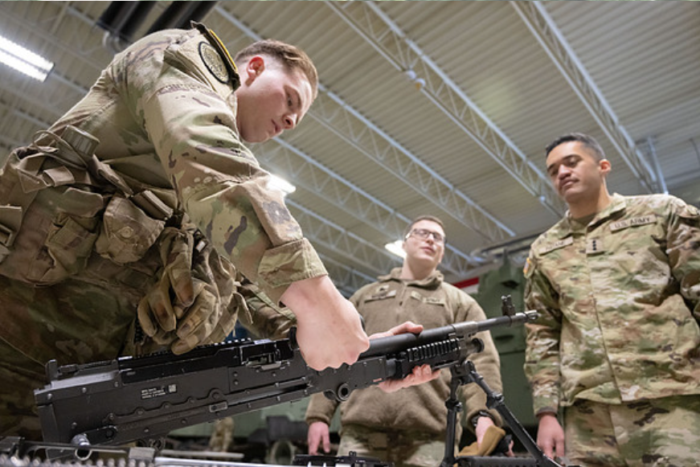
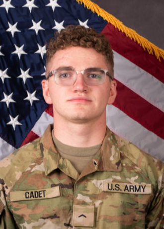
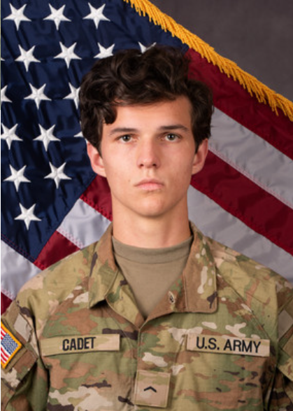
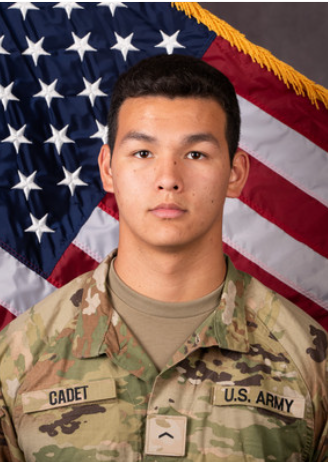

The best way to understand the ROTC program is to hear from the students who are currently and previously a part of it. Cadets often describe ROTC as one of the most challenging but rewarding experiences of their college years.
The program pushes students to grow, take responsibility, and develop leadership skills that last far beyond graduation.

“I have been a part of the ROTC for two semesters!! I love it!! It is a lot of fun. I love the brotherhood that comes with it. We just all kinda end up becoming friends! I have learned so much about discipline and leadership! We do so many fun things and lots of physical activity which I love! It has been a great experience and has truly been a big part of my life as a student here.”

“It's been challenging, but constructive. Critical thinking mixed with a physical challenge. But it's trivial when it's done with my fellow cadets, my comrades, my friends.”

“Physically demanding, loads of fun in the process.”
“For anyone who thinks that the army is too hard for them or they’re not cut out, it’s not. Especially, you know, females who think like, ‘Oh, I could never do that hard army stuff …’ it’s really a mental thing. I’ve met some great people who have made me a better person. So you do lots of hard things but you never know if you don’t try.”
“We’re all struggling in all sorts of ways, whether it’s with family or grades or being away from home … I just think people need to realize that we are also human, this is what we want to do. It might be different than the nursing program and business management, but we’re all here with the same goal in mind.”
“I think regardless of who you are, you are always welcome in the Army. I’ve been enlisted for a few years in the National Guard. So I’ve had opportunities outside of just ROTC experience in the Army. (The) Army is a really big melting pot … there’s somebody just like you. It doesn’t matter.”
“Being a member of the Army ROTC has helped me develop myself as a student and a professional. It has taught me responsibility, respect, discipline and how to challenge myself. Those interested should check out ROTC because it is a great opportunity.” -Emilio Lopez